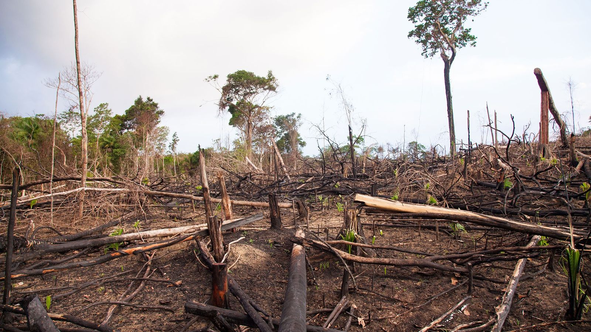
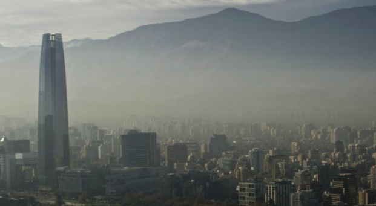

Articulos
Deforestacion
La deforestación o desforestación es un proceso provocado por la acción de los humanos, en el que se destruye o agota la superficie forestal, generalmente con el objetivo de destinar el suelo a otra actividad.
Contaminacion del Aire
Las principales causas de la contaminación del aire están relacionadas con la quema de combustibles fósiles (carbón, petróleo y gas). La combustión de estas materias primas se produce en los procesos o en el funcionamiento de los sectores industrial y del transporte por carretera, principalmente.
Tablas
| Pais | Volumen en mill. de toneladas | porcentaje |
|---|---|---|
| China | 9899 | 30.7 |
| EEUU | 4457 | 13.8 |
| UE | 2551 | 7.9 |
| India | 2302 | 7.1 |
| Japon | 1027 | 3.2 |
| Iran | 678 | 2.1 |
| Alemania | 605 | 1.9 |
| Corea del Sur | 578 | 1.8 |
| Arabia Saudi | 571 | 1.8 |
| Indonesia | 545 | 1.7 |
| Canada | 518 | 1.6 |
| Nombre Pais | Toneladas metricas en mill. | Bandera |
|---|---|---|
| China | 8.8 | |
| Indonesia | 3.2 | |
| Filipinas | 1.9 | |
| Vietnam | 1.8 | |
| Sri Lanka | 1.6 | |
| Egipto | Tailandia | |
| Nigeria | 0.9 | |
| Banglades | 0.8 | |
| Brasil | 0.5 | |
| EEUU | 0.3 |